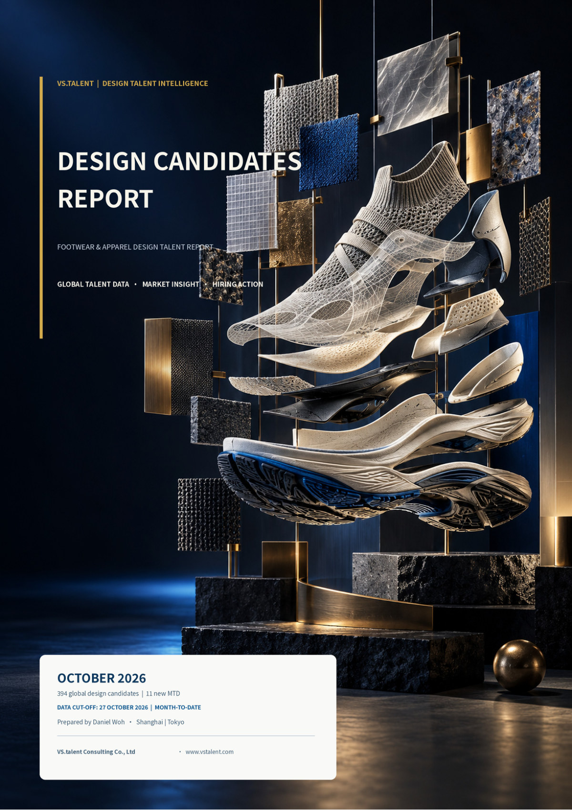

Leading Brand Ecosystems · October 2026
245 unique candidates (62.2%) have experience at one or more Top 10 brands. adidas remains the largest talent ecosystem with 107 candidates (27.2%), ahead of Nike (37), The North Face (31) and PUMA (30).
Monthly Intelligence
Updated monthly. Footwear and apparel design talent — 394 professionals in the current pool.
Data as of 27 October 2026
adidas leads with 107. Experienced talent remains concentrated in mature brand ecosystems. This is a month-to-date snapshot, not a full-month close.

Latest Intelligence
Data as of 27 October 2026
Month-to-date snapshot
As of 27 October 2026, the database covers 394 footwear and apparel design professionals open to new opportunities — 11 more than the September snapshot, or 2.9%. Additions are more evenly split between apparel and footwear. Outdoor and Luxury are the joint leading categories in that cohort, and flexible engagement preferences have increased.
Key findings
Interactive Charts
Five views from the 27 October snapshot. The briefing continues on Insights.
Leading Brand Ecosystems · October 2026
245 unique candidates (62.2%) have experience at one or more Top 10 brands. adidas remains the largest talent ecosystem with 107 candidates (27.2%), ahead of Nike (37), The North Face (31) and PUMA (30).
Global Nationality Distribution · October 2026
American designers lead at 126 (32.0%), followed by Korean talent at 51 and Chinese talent at 49. The Top 10 nationalities represent 93.7% of the pool (369 of 394).
Preferred Work Destinations · October 2026
China received 162 destination selections (41.1%) and Japan 122 (31.0%). Remote, Freelance and Hybrid — 72 selections from 71 candidates — are excluded from this geographic view.
Cross-border Talent Mobility · October 2026
Of 255 cross-border selections, China received 110 and Japan 105. US to Japan (39) and US to China (29) lead. 198 of 386 eligible candidates (51.3%) will consider a cross-border move.
Salary Distribution · October 2026
Based on 116 valid salary records (29.4%). The US median is about USD 221K across 37 records. China, Germany and Korea sit lower. Japan and France have fewer than five records and are directional only. The chart shows 107 records across eight countries.
Key Insights
Flexible engagement is rising inside the database, and it is not the same as relocation readiness. The briefing continues on Insights.
Monthly Intelligence
Data as of 27 October 2026. Shared upon request.
Month-to-date snapshot
Market Intelligence
The October edition covers 394 design professionals, 11 more than the September snapshot. The archive and the longer reading, including flexible engagement, are on Insights.
Full monthly reports are available upon request to verified hiring managers, HR leaders and selected industry partners.
Request Talent Mapping
Named org charts and design talent landscapes, used to inform search strategy before a mandate is briefed.
Services
Search, intelligence and creative support. Detail lives on Services.
01
Global design leadership hiring across footwear, apparel, graphics, CMF and innovation.
02
Monthly market intelligence and talent analytics from VS.talent's proprietary candidate database.
03
Freelance designers, consultants and creative project support from our global design network.
About VS.talent
Search, mapping and monthly intelligence from one specialised view of the design talent market. Why that focus produces deeper judgment continues on About.
Contact